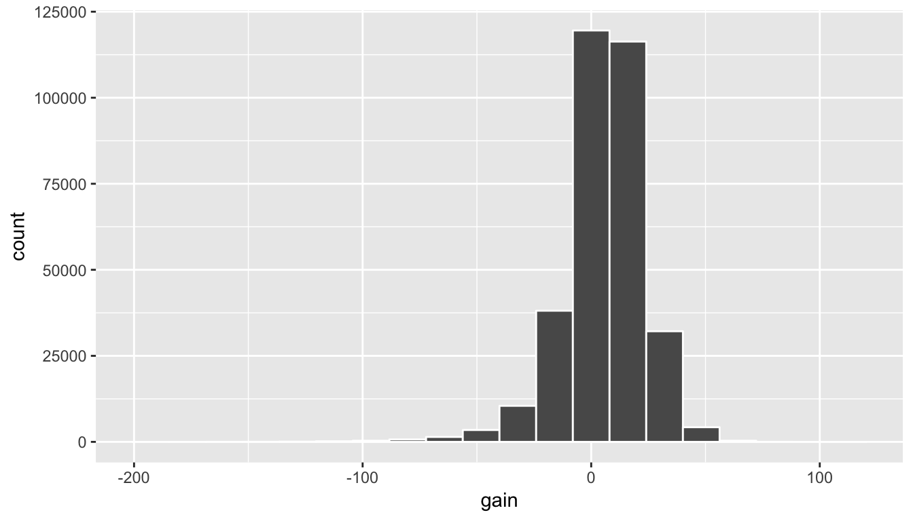
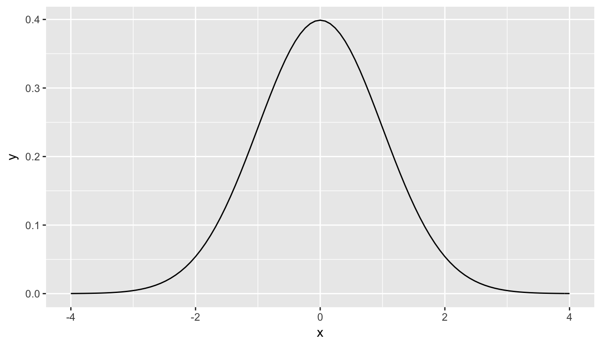

7 Hypothesis Testing
We saw some of the main concepts of hypothesis testing introduced in Chapter ??. We will expand further on these ideas here and also provide a framework for understanding hypothesis tests in general. Instead of presenting you with lots of different formulas and scenarios, we hope to build a way to think about all hypothesis tests. You can then adapt to different scenarios as needed down the road when you encounter different statistical situations.
The same can be said for confidence intervals. There is one general framework that applies to all confidence intervals and we will elaborate on this further in Chapter 8. The specifics may change slightly for each variation, but the important idea is to understand the general framework so that you can apply it to more specific problems. We believe that this approach is much better in the long-term than teaching you specific tests and confidence intervals rigorously. You can find full worked out examples for five common hypothesis tests and their corresponding confidence intervals in Appendix B. We recommend that you carefully review these examples as they also cover how the general frameworks apply to traditional normal-based methodologies like the \(t\)-test and normal-theory confidence intervals. You’ll see there that these methods are just approximations for the general frameworks, but require conditions to be met for their results to be valid. The general frameworks using randomization, simulation, and bootstrapping do not hold the same sorts of restrictions and further advance computational thinking, which is one big reason for their emphasis here.
7.1 Needed packages
library(dplyr)
library(ggplot2)
library(okcupiddata)
library(mosaic)
library(knitr)
library(nycflights13)7.2 Basics of Hypothesis Testing
In a hypothesis test, we will use data from a sample to help us decide between two competing hypotheses about a population. We make these hypotheses more concrete by specifying them in terms of at least one population parameter of interest. We refer to the competing claims about the population as the null hypothesis, denoted by \(H_0\), and the alternative (or research) hypothesis, denoted by \(H_a\). The roles of these two hypotheses are NOT interchangeable.
- The claim for which we seek significant evidence is assigned to the alternative hypothesis. The alternative is usually what the experimenter or researcher wants to establish or find evidence for.
- Usually, the null hypothesis is a claim that there really is “no effect” or “no difference.” In many cases, the null hypothesis represents the status quo or that nothing interesting is happening.
- We assess the strength of evidence by assuming the null hypothesis is true and determining how unlikely it would be to see sample results/statistics as extreme (or more extreme) as those in the original sample.
Hypothesis testing brings about many weird and incorrect notions in the scientific community and society at large. One reason for this is that statistics has traditionally been thought of as this magic box of algorithms and procedures to get to results and this has been readily apparent if you do a Google search of “flowchart statistics hypothesis tests”. There are so many different complex ways to determine which test is appropriate.
You’ll see that we don’t need to rely on these complicated series of assumptions and procedures to conduct a hypothesis test any longer. These methods were introduced in a time when computers weren’t powerful. Your cellphone (in 2016) has more power than the computers that sent NASA astronauts to the moon after all. We’ll see that ALL hypothesis tests can be broken down into the following framework given by Allen Downey here:

Figure 7.1: Hypothesis Testing Framework
Before we hop into this framework, we will provide another way to think about hypothesis testing that may be useful.
7.3 Criminal trial analogy
We can think of hypothesis testing in the same context as a criminal trial in the United States. A criminal trial in the United States is a familiar situation in which a choice between two contradictory claims must be made. 1. The accuser of the crime must be judged either guilty or not guilty.
Under the U.S. system of justice, the individual on trial is initially presumed not guilty.
Only STRONG EVIDENCE to the contrary causes the not guilty claim to be rejected in favor of a guilty verdict.
The phrase “beyond a reasonable doubt” is often used to set the cutoff value for when enough evidence has been given to convict.
Theoretically, we should never say “The person is innocent.” but instead “There is not sufficient evidence to show that the person is guilty.”
Now let’s compare that to how we look at a hypothesis test.
The decision about the population parameter(s) must be judged to follow one of two hypotheses.
We initially assume that \(H_0\) is true.
The null hypothesis \(H_0\) will be rejected (in favor of \(H_a\)) only if the sample evidence strongly suggests that \(H_0\) is false. If the sample does not provide such evidence, \(H_0\) will not be rejected.
The analogy to “beyond a reasonable doubt” in hypothesis testing is what is known as the significance level. This will be set before conducting the hypothesis test and is denoted as \(\alpha\). Common values for \(\alpha\) are 0.1, 0.01, and 0.05.
7.3.1 Two possible conclusions
Therefore, we have two possible conclusions with hypothesis testing:
- Reject \(H_0\)
- Fail to reject \(H_0\)
Gut instinct says that “Fail to reject \(H_0\)” should say “Accept \(H_0\)” but this technically is not correct. Accepting \(H_0\) is the same as saying that a person is innocent. We cannot show that a person is innocent; we can only say that there was not enough substantial evidence to find the person guilty.
When you run a hypothesis test, you are the jury of the trial. You decide whether there is enough evidence to convince yourself that \(H_a\) is true (“the person is guilty”) or that there was not enough evidence to convince yourself \(H_a\) is true (“the person is not guilty”). You must convince yourself (using statistical arguments) which hypothesis is the correct one given the sample information.
Important note: Therefore, DO NOT WRITE “Accept \(H_0\)” any time you conduct a hypothesis test. Instead write “Fail to reject \(H_0\).”
7.4 Types of Errors in Hypothesis Testing
Unfortunately, just as a jury or a judge can make an incorrect decision in regards to a criminal trial by reaching the wrong verdict, there is some chance we will reach the wrong conclusion via a hypothesis test about a population parameter. As with criminal trials, this comes from the fact that we don’t have complete information, but rather a sample from which to try to infer about a population.
The possible erroneous conclusions in a criminal trial are
- an innocent person is convicted (found guilty) or
- a guilty person is set free (found not guilty).
The possible errors in a hypothesis test are - rejecting \(H_0\) when in fact \(H_0\) is true (Type I Error) - failing to reject \(H_0\) when in fact \(H_0\) is false (Type II Error)
The risk of error is the price researchers pay for basing an inference about a population on a sample. With any reasonable sample-based procedure, there is some chance that a Type I error will be made and some chance that a Type II error will occur.
To help understand the concepts of Type I error and Type II error, observe the following table:

If we are using sample data to make inferences about a parameter, we run the risk of making a mistake. Obviously, we want to minimize our chance of error; we want a small probability of drawing an incorrect conclusion.
- The probability of a Type I Error occurring is denoted by \(\alpha\) and is called the significance level of a hypothesis test
- The probability of a Type II Error is denoted by \(\beta\).
Formally, we can define \(\alpha\) and \(\beta\) in regards to the table above, but for hypothesis tests instead of a criminal trial.
- \(\alpha\) corresponds to the probability of rejecting \(H_0\) when, in fact, \(H_0\) is true.
- \(\beta\) corresponds to the probability of failing to reject \(H_0\) when, in fact, \(H_0\) is false.
Ideally, we want \(\alpha = 0\) and \(\beta = 0\), meaning that the chance of making an error does not exist. When we have to use incomplete information (sample data), it is not possible to have both \(\alpha = 0\) and \(\beta = 0\). We will always have the possibility of at least one error existing when we use sample data.
Usually, what is done is that \(\alpha\) is set before the hypothesis test is conducted and then the evidence is judged against that significance level. Common values for \(\alpha\) are 0.05, 0.01, and 0.10. If \(\alpha = 0.05\), we are using a testing procedure that, used over and over with different samples, rejects a TRUE null hypothesis five percent of the time.
So if we can set \(\alpha\) to be whatever we want, why choose 0.05 instead of 0.01 or even better 0.0000000000000001? Well, a small \(\alpha\) means the test procedure requires the evidence against \(H_0\) to be very strong before we can reject \(H_0\). This means we will almost never reject \(H_0\) if \(\alpha\) is very small. If we almost never reject \(H_0\), the probability of a Type II Error – failing to reject \(H_0\) when we should – will increase! Thus, as \(\alpha\) decreases, \(\beta\) increases and as \(\alpha\) increases, \(\beta\) decreases. We, therefore, need to strike a balance in \(\alpha\) and \(\beta\) and the common values of 0.05, 0.01, and 0.10 usually lead to a nice balance.
Learning check
(LC7.1) Reproduce the table above, but for a hypothesis test, instead of the one provided for a criminal trial.
7.4.1 Logic of Hypothesis Testing
- Take a random sample (or samples) from a population (or two populations)
- If the sample data are consistent with the null hypothesis, do not reject the null hypothesis.
- If the sample data are inconsistent with the null hypothesis (in the direction of the alternative hypothesis), reject the null hypothesis and conclude that there is evidence the alternative hypothesis is true (based on the particular sample collected).
7.5 Statistical Significance
The idea that sample results are more extreme than we would reasonably expect to see by random chance if the null hypothesis were true is the fundamental idea behind statistical hypothesis tests. If data as extreme would be very unlikely if the null hypothesis were true, we say the data are statistically significant. Statistically significant data provide convincing evidence against the null hypothesis in favor of the alternative, and allow us to generalize our sample results to the claim about the population.
Definition: Statistical Significance
When results as extreme as the observed sample statistic are unlikely to occur by random chance alone (assuming the null hypothesis is true), we say the sample results/statistics are statistically significant. If our sample is statistically significant, we have convincing evidence against \(H_0\) and in favor of \(H_a\).
Learning check
(LC7.2) What is wrong about saying “The defendant is innocent.” based on the US system of criminal trials?
(LC7.3) What is the purpose of hypothesis testing?
(LC7.4) What are some flaws with hypothesis testing? How could we alleviate them?
7.6 Revisiting the Lady Tasting Tea example
Recall the “There is Only One Test” diagram from earlier:
Figure 7.2: Hypothesis Testing Framework
We will now walk-through how each of the steps to the diagram apply to determining whether the lady tasting tea was actually better than chance at determining whether or not milk was added first. We will see that the process of creating a null distribution is a statistical way to quantifying surprise.
7.6.1 Data
Let’s assume as we did in Chapter ??, that the lady is correct in determining whether milk was added first in 9 out of 10 trials. Our data, therefore, may look something like
| Correct |
| Correct |
| Correct |
| Incorrect |
| Correct |
| Correct |
| Correct |
| Correct |
| Correct |
| Correct |
7.6.2 Test Statistic \(\delta\)
We are interested in the number of Correct out of our 10 trials. We can denote this number of successes using the symbol \(t\), where \(t\) corresponds to total. This is our test statistic \(\delta\) in this case.
7.6.3 Observed effect \(\delta^*\)
The actual observed value of the test statistic from our observed sample is \(\hat{t}_{obs} = 9\). Thus, \(\delta^* = 9\).
7.6.4 Model of \(H_0\)
Our null hypothesis is that the lady is only as good as chance at guessing correctly. Hypotheses always correspond to parameters and are denoted with Greek letters. Thus, symbolically, we have \(H_0: \tau = 5\). Since we are assuming chance and we have 10 flips with 0.5 probability of success of each flip, we have \(\tau = 10 \times 0.5 = 5\).
7.6.5 Simulated Data
We now want to use this null hypothesis to simulate the test statistic assuming that the null hypothesis is true. Therefore, we want to figure out a way to simulate in 10 trials, getting either the choice Correct or Incorrect, assuming that the probability of success (getting it Correct) in any given trial is 0.5.
Tactile simulation
When you are presented with a hypothesis testing problem, frequently the most challenging portion is setting up how to simulate the data assuming the null hypothesis is true. To facilitate with this, setting up a tactile, hands on experiment can help.
In this case, flipping a fair coin is a great way to simulate this process. To simulate 10 trials, we could flip the fair coin and record Heads as Correct and Tails as Incorrect.
Some simulated data using this coin flipping procedure may look like the following. Note that this data frame is not tidy, but is a convenient way to look at the results of the simulation in this wide format. The numbers on the fair left correspond to the number of the trial.
| sample1 | sample2 | sample3 | |
|---|---|---|---|
| 1 | Correct | Correct | Correct |
| 2 | Correct | Incorrect | Incorrect |
| 3 | Incorrect | Incorrect | Correct |
| 4 | Incorrect | Incorrect | Correct |
| 5 | Correct | Incorrect | Incorrect |
| 6 | Correct | Incorrect | Correct |
| 7 | Incorrect | Incorrect | Correct |
| 8 | Incorrect | Correct | Incorrect |
| 9 | Incorrect | Correct | Incorrect |
| 10 | Incorrect | Correct | Incorrect |
We then use the formula for the Test Statistic to determine the simulated test statistic for each of these simulated samples. So in this case we have
\(t_1 = 4\), \(t_2 = 4\), \(t_3 = 5\)
7.6.6 Distribution of \(\delta\) under \(H_0\)
We could continue this process say 10,000 times by flipping a coin in sets of 10 for 10,000 repetitions and counting and taking note of how many heads out of 10 we have for each set. It’s at this point that you realize that a computer can do this procedure much faster and more efficient than the tactile experiment with a coin.
Recall that we’ve already created the distribution of 10,000 such coin flips in Chapter ?? and we’ve stored these values in the heads variable in the simGuesses data frame:
library(ggplot2)
simGuesses %>% ggplot(aes(x = factor(heads))) +
geom_bar()
7.6.7 The p-value
Definition: \(p\)-value:
The p-value is the probability of observing a sample statistic as extreme or more extreme than what was observed, assuming that the null hypothesis of a by chance operation is true.
This definition may be a little intimidating the first time you read it, but it’s important to come back to this “The Lady Tasting Tea” problem whenever you encounter \(p\)-values as you begin to learn about the concept. Here the \(p\)-value corresponds to how many times in our null distribution of heads 9 or more heads occurred.
We can use another neat feature of R to calculate the \(p\)-value for this problem. Note that “more extreme” in this case corresponds to looking at values of 9 or greater since our alternative hypothesis invokes a right-tail test corresponding to a “greater than” hypothesis of \(H_a: \pi > 0.5\). In other words, we are looking to see how likely it is for the lady to pick 9 or more correct instead of 9 or less correct. We’d like to go in the right direction.
pvalue_tea <- simGuesses %>%
filter(heads >= 9) %>%
nrow() / nrow(simGuesses)Let’s walk through each step of this calculation:
First,
pvalue_teawill be the name of our calculated \(p\)-value and the assignment operator<-directs us to this naming.We are working with the
simGuessesdata frame here so that comes immediately before the pipe operator.We would like to only focus on the rows in our
simGuessesdata frame that haveheadsvalues of 9 or 10. This represents simulated statistics “as extreme or more extreme” than what we observed (9 correct guesses out of 10). Let’s get a glimpse of what we have up to this point:simGuesses %>% filter(heads >= 9)## n heads tails prop ## 1 10 9 1 0.9 ## 2 10 10 0 1.0 ## 3 10 9 1 0.9 ## 4 10 9 1 0.9 ## 5 10 10 0 1.0 ## 6 10 9 1 0.9 ## 7 10 9 1 0.9 ## 8 10 9 1 0.9 ## 9 10 9 1 0.9 ## 10 10 9 1 0.9 ## 11 10 9 1 0.9 ## 12 10 9 1 0.9 ## 13 10 9 1 0.9 ## 14 10 9 1 0.9 ## 15 10 9 1 0.9 ## 16 10 9 1 0.9 ## 17 10 9 1 0.9 ## 18 10 9 1 0.9 ## 19 10 9 1 0.9 ## 20 10 9 1 0.9 ## 21 10 9 1 0.9 ## 22 10 9 1 0.9 ## 23 10 10 0 1.0 ## 24 10 10 0 1.0 ## 25 10 10 0 1.0 ## 26 10 9 1 0.9 ## 27 10 9 1 0.9 ## 28 10 9 1 0.9 ## 29 10 9 1 0.9 ## 30 10 9 1 0.9 ## 31 10 9 1 0.9 ## 32 10 9 1 0.9 ## 33 10 10 0 1.0 ## 34 10 9 1 0.9 ## 35 10 9 1 0.9 ## 36 10 10 0 1.0 ## 37 10 9 1 0.9 ## 38 10 9 1 0.9 ## 39 10 9 1 0.9 ## 40 10 9 1 0.9 ## 41 10 9 1 0.9 ## 42 10 9 1 0.9 ## 43 10 9 1 0.9 ## 44 10 9 1 0.9 ## 45 10 9 1 0.9 ## 46 10 9 1 0.9 ## 47 10 9 1 0.9 ## 48 10 9 1 0.9 ## 49 10 9 1 0.9 ## 50 10 9 1 0.9 ## 51 10 9 1 0.9 ## 52 10 9 1 0.9 ## 53 10 9 1 0.9 ## 54 10 9 1 0.9 ## 55 10 9 1 0.9 ## 56 10 10 0 1.0 ## 57 10 10 0 1.0 ## 58 10 9 1 0.9 ## 59 10 9 1 0.9 ## 60 10 9 1 0.9 ## 61 10 9 1 0.9 ## 62 10 9 1 0.9 ## 63 10 9 1 0.9 ## 64 10 9 1 0.9 ## 65 10 9 1 0.9 ## 66 10 10 0 1.0 ## 67 10 9 1 0.9 ## 68 10 9 1 0.9 ## 69 10 9 1 0.9 ## 70 10 9 1 0.9 ## 71 10 9 1 0.9 ## 72 10 9 1 0.9 ## 73 10 9 1 0.9 ## 74 10 9 1 0.9 ## 75 10 9 1 0.9 ## 76 10 9 1 0.9 ## 77 10 9 1 0.9 ## 78 10 9 1 0.9 ## 79 10 10 0 1.0 ## 80 10 9 1 0.9 ## 81 10 9 1 0.9 ## 82 10 10 0 1.0 ## 83 10 9 1 0.9 ## 84 10 9 1 0.9 ## 85 10 9 1 0.9 ## 86 10 10 0 1.0 ## 87 10 10 0 1.0 ## 88 10 9 1 0.9 ## 89 10 9 1 0.9 ## 90 10 9 1 0.9 ## 91 10 9 1 0.9 ## 92 10 9 1 0.9 ## 93 10 9 1 0.9 ## 94 10 9 1 0.9 ## 95 10 9 1 0.9 ## 96 10 9 1 0.9 ## 97 10 9 1 0.9 ## 98 10 9 1 0.9 ## 99 10 9 1 0.9 ## 100 10 9 1 0.9 ## 101 10 9 1 0.9 ## 102 10 9 1 0.9 ## 103 10 9 1 0.9 ## 104 10 9 1 0.9 ## 105 10 9 1 0.9Now that we have changed the focus to only those rows that have number of heads out of 10 flips corresponding to 9 or more, we count how many of those there are. The function
nrowgives how many entries are in this filtered data frame and lastly we calculate the proportion that are at least as extreme as our observed value of 9 by dividing by the number of total simulations (10,000).
We can see that the observed statistic of 9 correct guesses is not a likely outcome assuming the null hypothesis is true. Only around 1% of the outcomes in our 10,000 simulations fall at or above 9 successes. We have evidence supporting the conclusion that the person is actually better than just guessing at random at determining whether milk has been added first or not. To better visualize this we can also make use of pink shading on the histogram corresponding to the \(p\)-value:
library(ggplot2)
simGuesses %>%
ggplot(aes(x = factor(heads), fill = (heads >= 9))) +
geom_bar() +
labs(x = "heads")Figure 7.3: Barplot of heads with p-value highlighted
This helps us better see just how few of the values of heads are at our observed value or more extreme.
We’ll see in Chapters 7 and 8 that this idea of a \(p\)-value can be extended to the more traditional methods using normal and \(t\) distributions in the traditional way that introductory statistics has been presented. These traditional methods were used because statisticians haven’t always been able to do 10,000 simulations on the computer within seconds. We’ll elaborate on this more in these later chapters.
Learning check
(LC7.5) What is meant by “pseudo-random number generation?”
(LC7.6) How can simulation be used to help us address the question of whether or not an observed result is statistically significant?
(LC7.7) In Chapter ??, we noted that barplots should be used when creating a plot of categorical variables. Why are we using barplots to make a plot of a numerical variable heads in this chapter?
7.7 When Inference Is Not Needed
An important and time-saving skill is to ALWAYS do exploratory data analysis using dplyr and ggplot2 before thinking about running a hypothesis test. Let’s look at such an example selecting a sample of flights traveling to Boston and to San Francisco from New York City in the flights data frame in the nycflights13 package. (We will remove flights with missing data first using na.omit and then sample 100 flights going to each of the two airports.)
library(nycflights13)
data(flights)
bos_sfo <- flights %>% na.omit() %>%
filter(dest %in% c("BOS", "SFO")) %>%
group_by(dest) %>%
sample_n(100)Suppose we were interested in seeing if the air_time to SFO in San Francisco was statistically greater than the air_time to BOS in Boston. As suggested, let’s begin with some exploratory data analysis to get a sense for how the two variables of air_time and dest relate for these two destination airports:
library(dplyr)
bos_sfo %>% group_by(dest) %>%
summarize(mean_time = mean(air_time),
sd_time = sd(air_time))## # A tibble: 2 × 3
## dest mean_time sd_time
## <chr> <dbl> <dbl>
## 1 BOS 38.06 3.773432
## 2 SFO 346.84 16.193726Looking at these results, we can clearly see that SFO air_time is much larger than BOS air_time. The standard deviation is also extremely informative here.
Learning check
(LC7.8) Could we make the same type of immediate conclusion that SFO had a statistically greater air_time if, say, its corresponding standard deviation was 200 minutes? What about 100 minutes? Explain.
To further understand just how different the air_time variable is for BOS and SFO, let’s look at a boxplot:
library(ggplot2)
ggplot(data = bos_sfo, mapping = aes(x = dest, y = air_time)) +
geom_boxplot()
Since there is no overlap at all, we can conclude that the air_time for San Francisco flights is statistically greater (at any level of significance) than the air_time for Boston flights. This is a clear example of not needing to do anything more than some simple descriptive statistics to get an appropriate inferential conclusion. This is one reason why you should ALWAYS investigate the sample data first using dplyr and ggplot2 via exploratory data analysis.
As you get more and more practice with hypothesis testing, you’ll be better able to determine in many cases whether or not the results will be statistically significant. There are circumstances where it is difficult to tell, but you should always try to make a guess FIRST about significance after you have completed your data exploration and before you actually begin the inferential techniques.
7.8 Script of R code
An R script file of all R code used in this chapter is available here.
7.9 What’s to come?
This chapter examined the basics of hypothesis testing with terminology and also an example of how to apply the “There is Only One Test” diagram to the Lady Tasting Tea example presented in Chapter ??. We’ll see in Chapter 8 how we can provide a range of possible values for an unknown population parameter instead of just running a Yes/No decision from a hypothesis test.
We will see in Chapter ?? many of the same ideas we have seen with hypothesis testing and confidence intervals in the last two chapters. Regression is frequently associated both correctly and incorrectly with statistics and data analysis, so you’ll need to make sure you understand when it is appropriate and when it is not.